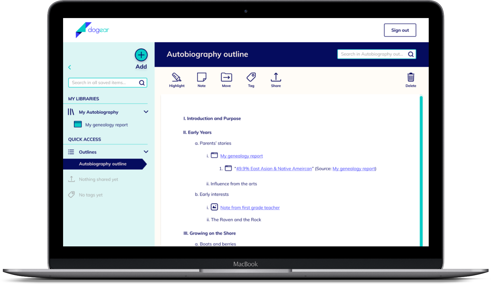
Ease your writing process
Skip to design process step
Overview
Roles
- Researcher and analyst
- UX and UI designer
Tools
- Google Forms
- Numbers for Mac
- Draw.io
- Sketch
- Adobe Illustrator
- Figma
- Usability Hub
- Keynote for Mac
- Adobe After Effects
- Style guide
- High-fidelity mockups (desktop and mobile)
- Clickable prototypes
- Assets for developer handoff
Deliverables
Timeframe
- 8 weeks
Problem
Writing is hard. Especially when you have all kinds of sources to draw from. How many times have you saved a bunch of source files, then when it came time to write you couldn’t remember where you read that important fact?
Solution
Dogear allows you to spend more time writing and less sifting through files. Organize everything by project, search by keyword, and tag sources for easy access. Drop sources into your outlines, so they’re right there when you need them. You have the information and inspiration; dogear just greases the wheels.
Research and Scoping
Competitive analysis
I started by surveying the landscape, looking into three existing cloud storage platforms that writers might use.
Key findings
There are lots of things that work well in each of these platforms. Each of them has different strengths, but there is no one that provides a comprehensive set of features especially for writers, like the ability to:
- Save any type of file or web source
- Highlight and leave notes
- Perform global keyword searches
- Create tags
- Create outlines
challenge
Faced with a blank slate - a prompt to develop a cloud storage platform - an initial challenge was to pinpoint an audience. My writing experience led me to believe there could be a gap in the landscape of tools designed specifically for writers.
user research
What problems, if any, could a new product solve for writers?
User survey
28 people shared insights through an online survey.
Paired with the gaps in the competitive landscape, the survey helped me see an opportunity for a new cloud storage platform tailored for writers. Below are some key findings from the survey.
Writing types
Survey respondents most often write for professional, personal/hobby, and academic purposes.
Platforms used
Most use a general cloud storage platform like Google Drive.
Processes
They compile sources by copying links into a text document, creating internet browser bookmarks, and/or saving files to a local folder.
Frustrations
Writers have difficulty organizing and searching through large numbers of files, especially when they’re saved in multiple places.
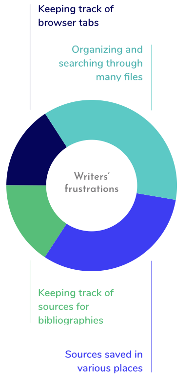
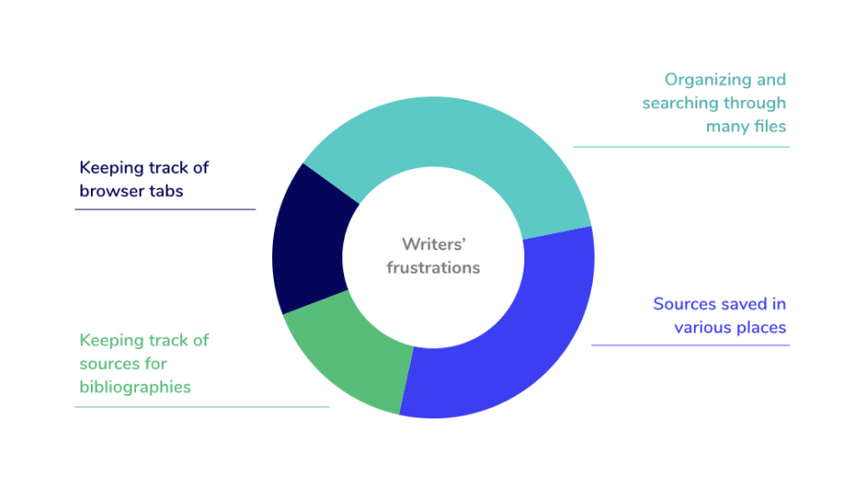
would do
differently
A couple survey questions could have been more straightforward. Survey respondents are volunteering their time and don’t always read questions carefully, so in future surveys I’ll make clarity and brevity a stonger priority.
user personas & user stories
Who wants a new cloud storage platform and what do they want it to do?
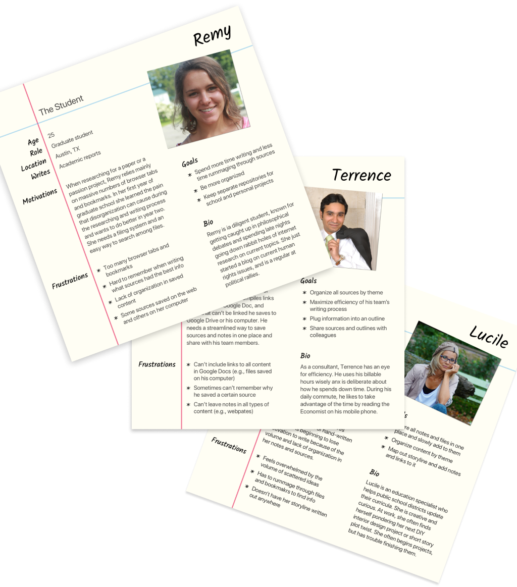
User personas
The online survey gave me the information needed to personify the target audiences for the new product.
The Student
Age 25
Austin, TX
Writes academic reports
Frustrations
- Too many browser tabs and bookmarks
- Hard to remember which sources had which info
Goals
- Spend less time rummaging through files
- Separate her school and personal repositories

The Busy Professional
Age 33
Oakland, CA
Writes professional reports
Frustrations
- Can’t include links to all files in Google Docs
- Can’t remember why he saved some sources
- Can’t leave notes in all types of content
Goals
- Maximize team efficiency
- Plug information into an outline
The Side Project Enthusiast
Age 42
Richmond, VA
Writes novels and short stories
Writes novels and short stories
Frustrations
- Overwhelmed by scattered ideas
- Doesn’t have storylines written down
Goals
- Store all notes and files in one place
- Be more organized
lesson learned
A couple survey questions could have been more straightforward. Survey respondents are volunteering their time and don’t always read questions carefully, so in future surveys I’ll make clarity and brevity a stonger priority.
Information architecture
user flows, sitemap, & content strategy
How can users easily do what they want to do?
User flows
To map the process for accomplishing user stories, I created user flows - first rough paper sketches and then digitally.
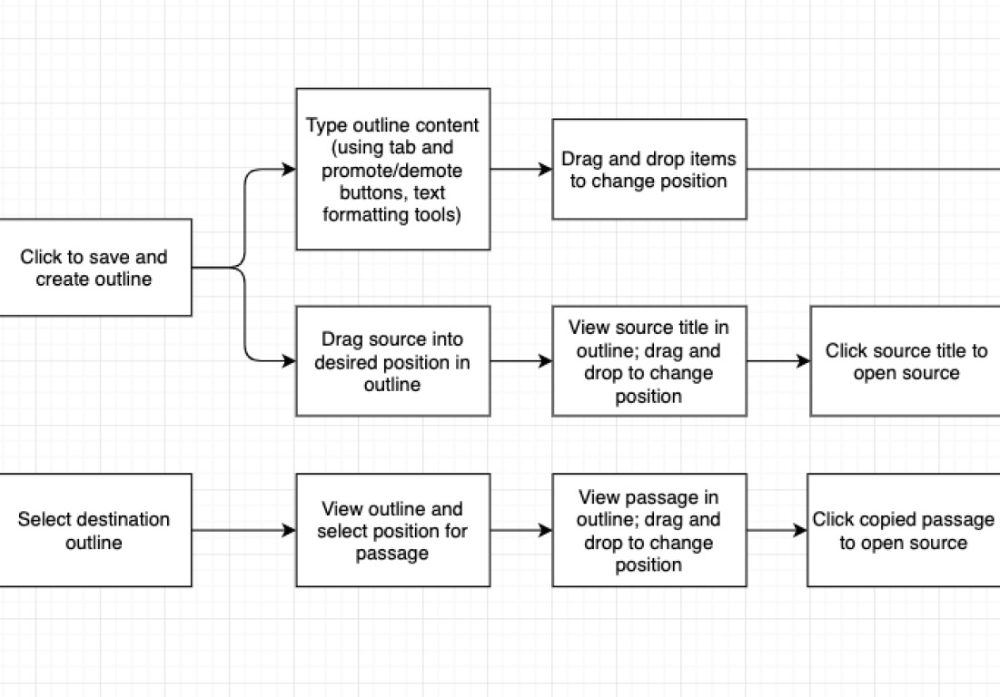
Sitemap
But what screens will users see as they move through the flows?
I found that after the onboarding process, the sitemap is pretty simple: almost everything happens in the user’s dashboard and popover forms.
With the sitemap in hand, I drafted a content strategy for each of the main screens. I would refine the content throughout the design process.
challenge
While creating user flows, I realized that there could be many ways to use the various elements (start/end oval, decision point diamond, etc.). Each team might use symbols slightly differently.
wireframes
What screen layouts will be most effective?
Wireframes
I started by iterating on the basic information architecture of key screens - again, on paper and then digitally.
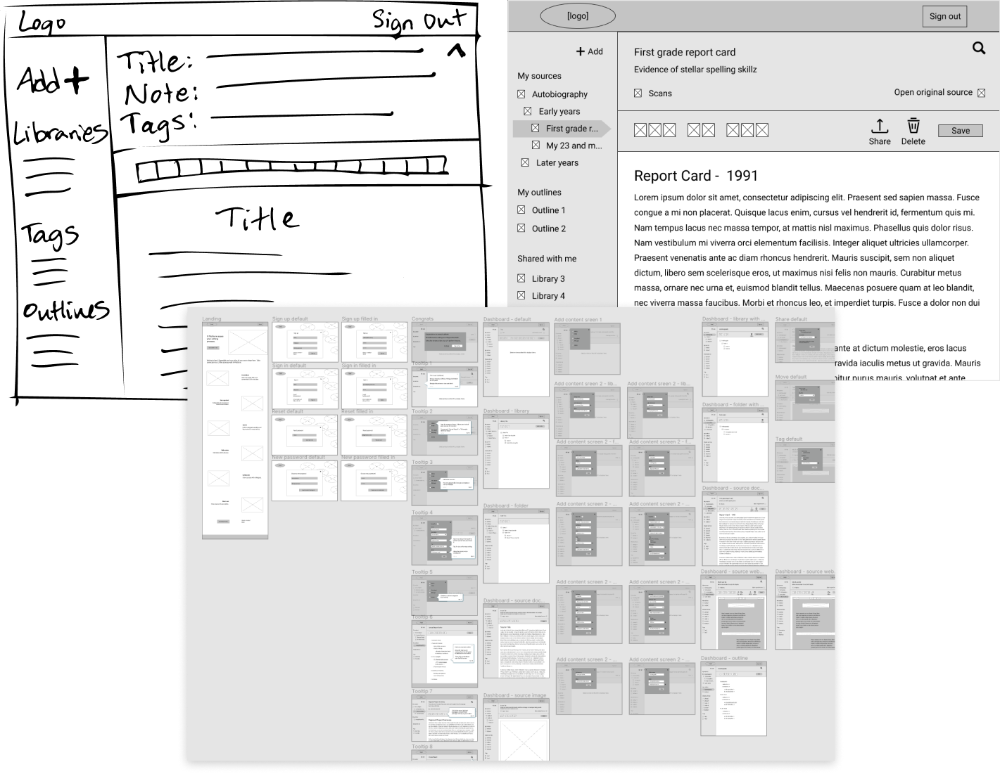
User testing
I tested the low-fidelity clickable prototype by asking three users to perform a few tasks.
Tasks
- Sign up
- Upload a source
- Move a source to a new folder
Revisions
Testers found a few stumbling blocks that I needed to address. Revisions that helped included:
- Streamlining the onboarding tour
- Choosing more recognizable icons
- Adding words along with icons on buttons
- Enabling dragging and dropping (developers, I’m looking at you for this one!)
lesson learned
Showing various states of a screen often means duplicating and modifying the screen mockup. So, avoid endless updates by making sure the base mockup is right before rolling it out!
Visual design
branding
Enough with the black and white. Let’s give this product a personality!
Logo iterations
Lots of sketching and word associations left me with diverging options for the brand’s name and logo.
Preference testing
Not sure which concept to run with, I turned to users for their opinions on four options.
Results
The results were clear: users liked dogear because it most tangibly relates to the purpose of the platform.
I was surprised; I thought the dogear logo was a bit boring, even dated. I wanted it to be more modern, edgy, and relatable.
Revisions
One key change was to update the colors, where vibrant blues are associated with computers and technological energy. I also swapped out the typeface for one that’s lighter and more contemporary, complemting the logo’s 45-degree angle.
Look and feel
With a general tone set by the logo, I created a moodboard and style guide.
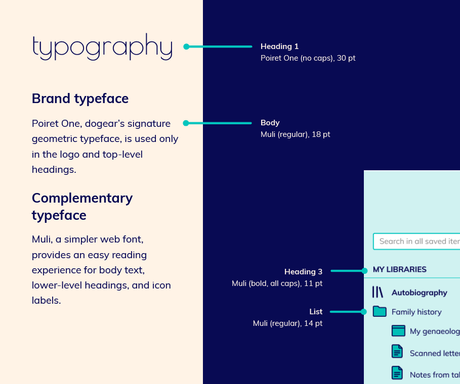
would do differently
I sent the logo preference test in color, but next time I’ll use greyscale so participants aren’t swayed by their color preferences. I might even deploy separate tests for the name and logo, since the logos got much more attention than the associated names.
mockups & preference testing
How does the style look on the actual product?
Design iterations
I had to work through some ugly first tries to get to a more polished look and feel.
Enter mobile
And at this point, there was a twist.
Until now, I had focused entirely on the desktop app. However, the hypothetical client introduced that they also wanted a mobile app. Without the resources to perform new research and wireframing for mobile, I used what I learned from the desktop to create mobile mockups.
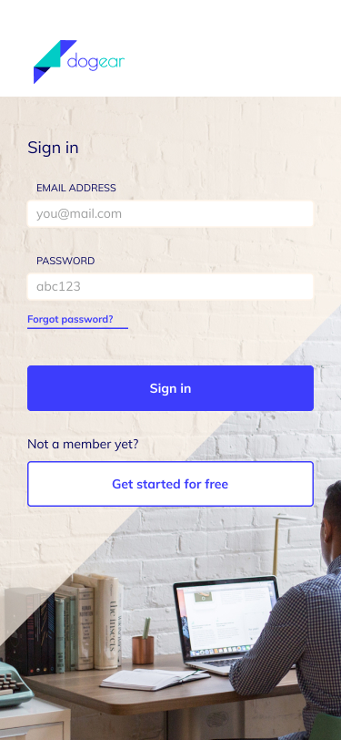
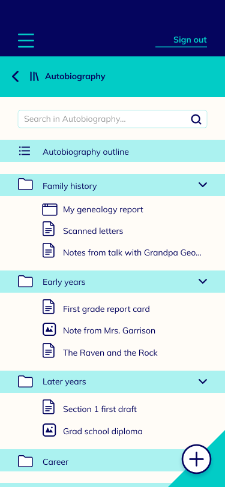
Preference testing
There were a few design questions that came up while making mockups:
- On mobile, should the tool buttons be on top or bottom?
- How about the add button - top or bottom?
- For desktop, the user can keyword search within a single document or across all documents; how should I show this?
I performed preference tests for each of the above questions, with 18-20 respondents per test. For two of the questions, the solutions were clear. For one - the mobile “Add” button - I needed to be a bit more creative.
“Add” button preference test
option a
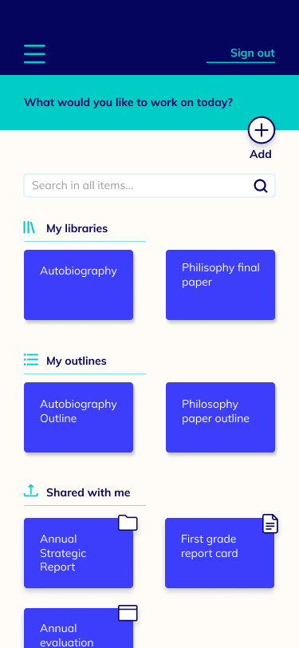
“Add” button on top
60% of participants selected this option, but noted issues like wasted space and the possibility of mis-clicks with the search field.
option b
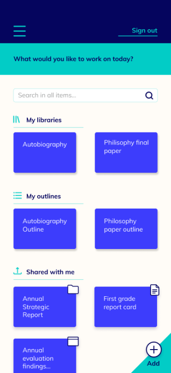
“Add” button on bottom
40% of participants selected this option, noting the easier thumb reach and look that fits with the brand.
solution
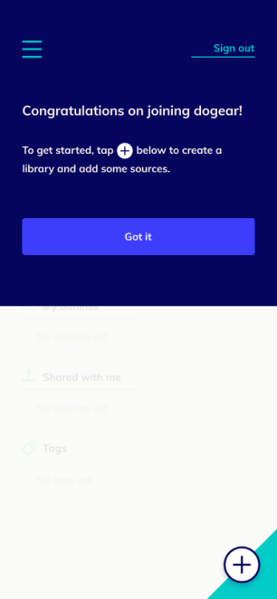
The compromise
I added a popover upon sign-up that tells the user where the “Add” button is. The on-load animation reinforces this position.
lesson learned
Some of the guidelines in the style guide didn’t quite work in practice. So, style guide and mockup development can be somewhat iterative.
Development and deployment
user testing & prototypes
Does the interface work for users?
User testing
With revisions in place based on preference testing, I wanted to test the high-fidelity clickable prototype with users.
I called on three colleagues and family members to perform several tasks in the clickable prototypes.
Tasks
- Sign up and take the tour
- Navigate to a library
- Add a folder
Revisions
The testers had some really useful insights. One faulty assumption that came to light involved the file organization structure. I had categorized libraries, outlines, and tags into separate, equal sections at the top of the file hierarchy. However, users expected their outlines and tags to reside within the relevant library.
Good point!
Final deliverables
With these and other revisions in place, the dogear design assets are ready to hand off to developers.
lesson learned
Technical and logistical issues can really change a user testing experience. For example, not everyone is comfortable using a buttonless Mac trackpad.
One more thing
I wasn’t quite done, though. To me, the dogear logo was just asking to be animated.
I looked around for the appropriate software to create a custom animation, and fell into Adobe After Effects. It’s not perfect, but with some finessing my hope is the animation would create a memorable and meaningful experience.

Final thoughts
If coded up into an app for launch, I think dogear could in fact make writers’ lives easier.
There are some things I would experiment with further, like:
- Transitions
- Tools for different types of saved sources
- Simplified iconography
I would be excited to work with developers to implement all the functions that writers need most.
Until then, happy writing!